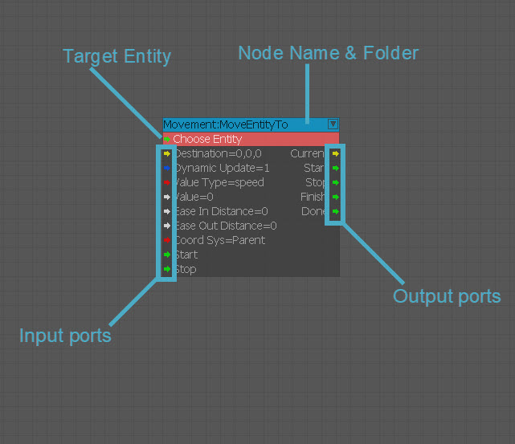

Overview
A node is the representation of an entity or an action inside the Flow Graph.
Types of Nodes
There are two categories of nodes: Entity nodes and Component nodes:
Type | Description |
|---|---|
Entity Nodes | Entity nodes are representations of entities in the level. The ports on the nodes are defined in the LUA script. You can also select an entity in the viewport and in the Flow Graph editor, right-click and select Add Selected Entity to add the selected entity to the graph. |
Component Nodes | Component nodes are abstract nodes that perform a specific behavior. Component nodes can have a target entity set to perform actions on. They can also exist without targeting a specific entity (For example, Logic:Any, Math:Add, or Interpol:Float) |
Ports
The layouts of Component and Entity nodes are similar. A node consists of two sides, an input and an output. The information transfer of the nodes is handled through ports. Ports can send or receive information. On the left side of a node, you will find the input ports that are used for connecting incoming links. Links from other nodes are connected to these ports. The ports on the right side of the node are called output ports and are activated depending on the behavior of the node. Ports are visualized as small arrows on both sides of the nodes. Ports can have different data types, which can be determined by their color. A port can have one of six different data types:
- Any: It is an unspecified data type; any input can be fed into this port.
- Boolean: A Boolean value can be either true or false.
- Integer: An integer is a whole number that can be either positive or negative.
- Float: A floating point value data type.
- Vec3: A data type consisting of three float values, representing a vector; used for storing positions, angles or color values.
- String: A string is an array of characters that is used for storing text.
Values whose type does not match with the input port data type will be automatically converted to match the type of the port that they are connected to, if possible. Any output port can be connected to any input port, no matter what type. An integer with the value 1 can be fed in a Boolean input port and it will be converted as true to match the data type of the port. For some component nodes, there is a special input port at the top of the entity, which is used for setting the target entity of the node.
Each type of port has a specific color assigned to it, to help users to quickly determine the data type provided or accepted by the port.
The colors are:
Color | Data Type |
|---|---|
Green | Any |
Red | Integer |
Blue | Boolean |
White | Float |
Turquoise | String |
Yellow | Vec3 |

- Links: Links are used for connecting ports and for transferring information between them. The length or the shape of a link is not important because the signal is always transferred immediately. When any of the nodes connected with a link are moved, the link will automatically adjust itself. Links are created by dragging between the input and output ports. Links can be deleted by unplugging them from the output port or by using the link context menu.